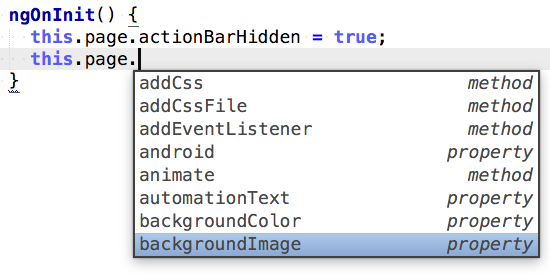
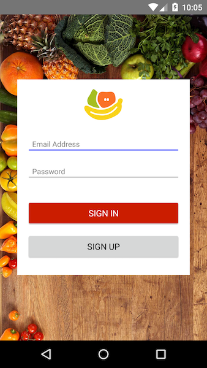
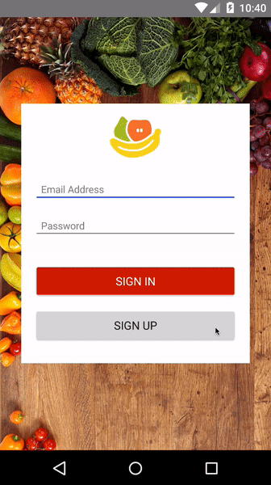
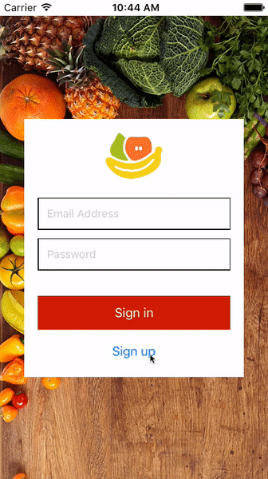

Chapter 4—NativeScript Modules
Chapter 4—NativeScript Modules
In this chapter you’ll learn about NativeScript modules, which are the TypeScript modules in your app’s node_modules/tns-core-modules folder. Whether you’ve realized it or not, you’ve already used several NativeScript modules, as all of the NativeScript UI elements are actually implemented with TypeScript code.
Table of contents
If you dig into node_modules/tns-core-modules you can get an idea of how these modules work. Start by finding the node_modules/tns-core-modules/camera folder, which includes the implementation of the camera module. It includes:
- a
package.jsonfile that sets the name of the module; - a file containing the module’s Android implementation (
camera.android.js); - a file containing the module’s iOS implementation (
camera.ios.js); - a file containing code shared by the Android and iOS implementations (
camera-common.js)
NOTE:
- You can refer to the Node.js documentation on folders as modules for more detailed information on how NativeScript organizes its modules.
- The “tns-core-modules” package only includes compiled JavaScript code to cut down on file size. You can find the TypeScript code for each of these modules in the main NativeScript GitHub repo, for instance here’s the camera module’s source code.
The *.ios.* and *.android.* naming convention should look familiar, as it’s the exact same convention we used to include Android- and iOS-specific styling in chapter 2. NativeScript uses this same convention to implement its modules on iOS and Android. Now that you know where these modules are, let’s take a closer look at what else they can do for your app, starting with a closer looks at what you can do with NativeScript’s UI elements.
4.1: UI elements
So far, you’ve only used NativeScript UI elements by including them in an Angular 2 component’s template, but you can also programmaticly create and access UI elements, and each UI element has a set of properties and methods you can use to customize your app. To see how this works lets access the <Page> UI element and make some changes to it.
Exercise: Customize the Page
Open app/pages/login/login.component.ts, and add the following import to the top of the file:
NOTE: All of the imports you’ve seen to this point work because the TypeScript compiler resolves them against your project’s
node_modulesfolder. For instance,import { Component } from "@angular/core"works because anode_modules/angular2/core.d.tsfile exists. The two imports above are NativeScript module imports, and they work because your project’sreferences.d.tsfile includes a reference to a TypeScript declaration file (a.d.tsfile), that lives innode_modules/tns-core-modules, and which allows you to import modules fromnode_modules/tns-core-moduleswithout any prefixes.
Next, alter the same file’s existing "@angular/core" import to include the OnInit interface:
OnInit is a TypeScript class interface. To see how it works, make the following change to the declaration of your LoginComponent class:
If you’re using an editor that supports TypeScript, you should see an error that says something like “Class ‘LoginComponent’ incorrectly implements interface ‘OnInit’”. When you implement a TypeScript class interface, you’re telling the TypeScript compiler that you must implement all methods that the interface requires. In the case of OnInit, Angular 2 requires you to implement a single ngOnInit() method. To implement it, add the following code within the LoginComponent class:
ngOnInit is one of several component lifecycle hooks that Angular 2 provides. As its name implies, ngOnInit gets invoked when Angular initializes this component.
We’ll discuss what the code within ngOnInit() does momentarily, but finally, to make these changes compile and run, change the LoginComponent’s existing constructor() declaration to use the code below.
NOTE: Because the
Pageclass is so commonly used in NativeScript apps, NativeScript provides this syntax as a shorthand for getting access to a component’s page.
Now that you have this code in place, let’s discuss what happens in these two lines:
``` TypeScript this.page.actionBarHidden = true; this.page.backgroundImage = "res://bg_login"; ```This code uses an instance of the Page class from the NativeScript page module, and sets two properties on it—actionBarHidden and backgroundImage. Although you can peruse the NativeScript API documentation for a full list of these properties and what they do, if you’re using a TypeScript-friendly IDE, you can get a full list of these properties at any point.

If you run your app you should see that the action bar—the bar beneath the status bar that had previously displayed on Android—is now hidden, and the page uses a gorgeous new background image:

Let’s look at a few other NativeScript modules you can use to help improve the look of this app.
4.2: Animations
The ability to run robust and performant animations is the one of the biggest reasons people choose to build native mobile apps, and NativeScript makes running these animations simple. The NativeScript animation modules provides a series of JavaScript APIs that let you perform a wide variety of animations to elements on the screen, including the following:
Let’s add a simple animation so you can see how they work.
Exercise: Add a color animation
Open app/pages/login/login.html and add #container to the existing <StackLayout>:
The “#” syntax is Angular’s way of creating local template variables, and you’ll use this local variable to get a reference to the <StackLayout> element in TypeScript code momentarily.
Next, open app/pages/login/login.component.ts and add the following two lines at the top, which import the Color class from the NativeScript color module, and the View class from the NativeScript view module.
After that, change the existing “@angular/core” import to include a few more classes:
``` TypeScript import { Component, ElementRef, OnInit, ViewChild } from "@angular/core"; ```With these new imports in place, next, add the following property to the LoginComponent class. Place it right under the isLoggingIn = true; line:
This code uses Angular’s @ViewChild decorator to create a new property that points at the <StackLayout> element. To use that property, change the LoginComponent’s toggleDisplay() function in the same file to use this code:
All NativeScript UI elements inherit from a base View class, which contains a number of useful methods—including the animate() method you used in the previous example.
One you have a reference to a UI element, you can call any of the methods that element inherits from View. In this case, you call the <StackLayout #container> element’s animate() method to change its background color over a duration of 200, or 2/10 of a second. The effect is a subtle color change that helps user differentiate between the “Sign In” and “Sign Up” functionality that your form provides.
 
NOTE: You may notice that the text color is off with the brown background. Don’t worry about that for now; we’ll address those colors in chapter 6.
The animation module is a lot of fun to play with, and it’s easy to use too. All you need to do is get a reference to an element using @ViewChild, and then call that element’s animate() method. You may want to take a few minutes to look through our animation samples and try a few of these animations for yourself in Groceries.
For now, let’s move on to another commonly used NativeScript UI element: the <ListView>.
4.3: ListView
The ListView element lets you show a list of things on the screen, which is exactly what you need for showing a list of groceries. Before tying the grocery list to a backend API, let’s start by seeing how to show a hardcoded list of items on the screen.
Exercise: Build a list view
Open app/pages/list/list.html and replace its contents with the following code:
We’ll talk about the new syntax in a moment, but first let’s define the class names used in the previous example. Open app/app.css and paste the following code at the bottom of the file, which defines a few utility class names you can use throughout your app:
Next, open app/pages/list/list.component.ts and replace its contents with the code below: